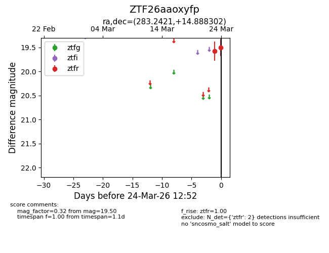
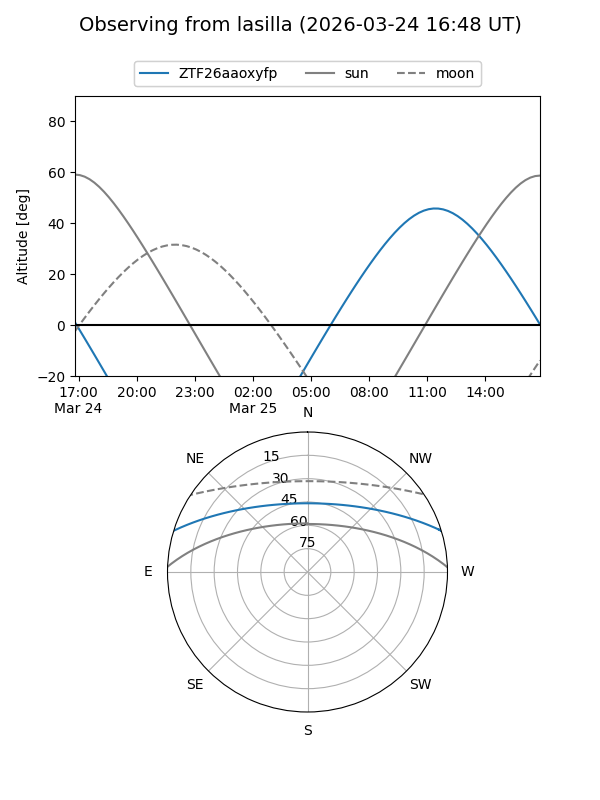
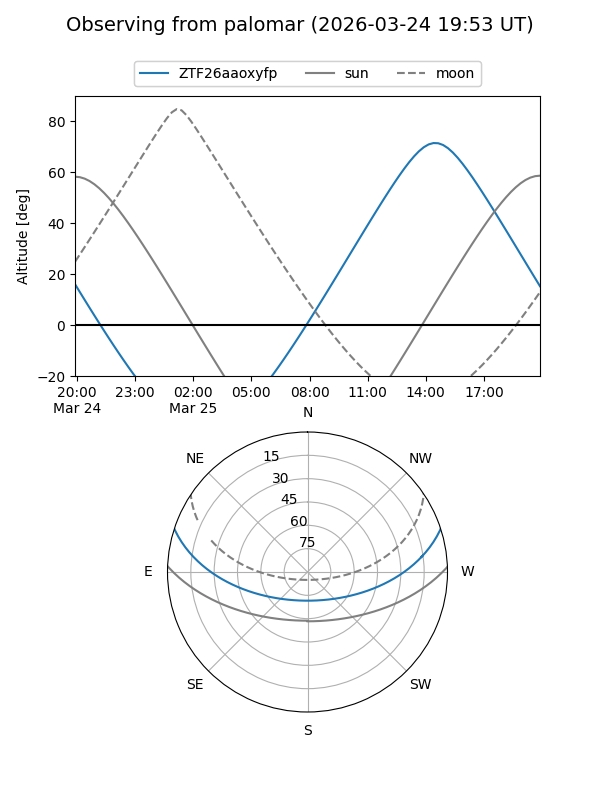

ZTF26aaoxyfp
Target ZTF26aaoxyfp at 2026-03-24 12:55
Aliases and brokers:
FINK: link
Lasair: link
ALeRCE: link
alt names
ZTF26aaoxyfp (ztf,fink_ztf)
Coordinates:
equatorial (ra, dec) = 283.2421,+14.88830
equatorial (HMS+DMS) = 18:52:58.11,+14:53:17.89
galactic (l, b) = (46.4094,+6.39685)
Flags:
Photometry:
last ztfr=19.50
2 ztfr detections
Lightcurve

Visibility


Additional plots